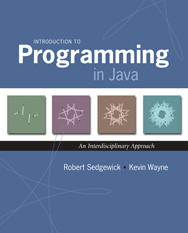

An introduction to computer science in the context of scientific, engineering, and commercial applications. The goal of the course is to teach basic principles and practical issues, while at the same time preparing students to use computers effectively for applications in computer science, physics, biology, chemistry, engineering, and other disciplines. Topics include: programming in Java; hardware and software systems; algorithms and data structures; fundamental principles of computation; and scientific computing, including simulation, optimization, and data analysis.
None.
Lectures meet on Tuesdays and Thursdays from 10:00-10:50am in McCosh 10.
Precepts meet twice a week on Tuesdays & Thursdays or Wednesdays & Fridays.
|  |
Required reading.R. Sedgewick and K. Wayne, Introduction to Programming in Java: An Interdisciplinary Approach, Addison-Wesley, 2007. ISBN 0-321-49805-4. Available at Labyrinth Bookstore, 122 Nassau Street. Also on reserve at Friend library. |
Recommended reading.D. Harel, Computers Ltd.: What They Really Can't Do, Oxford, 2003. ISBN 0-19-860442-4. Available at Labyrinth Bookstore, 122 Nassau Street. Also on reserve at Friend library. |
This website contains a wealth of resources for students to practice and study computer science, including archives of lecture slides, online programming activities with solutions, a Java visualizer, and the past five years of exams with solutions. This site can be found at the following address: http://www.princeton.edu/~cos126
This course has an associated software package called introcs that enables students to write and test code. Students may install it on their own computer by following the instructions for their operating system, whether they are running Windows, Mac, or Linux.
For students who may not have a computer or for students whose computers fail during the semester, we provide cluster machines in Friend Center 017 with the course software pre-installed. Click here for information on using the labs.
Semester grades are composed of two two-part exams worth 50%, nine programming assignments worth 40%, and one final programming project worth 10%. Grades are not curved. Expect the cutoff for an "A" to be approximately 93% of the available points, expect the cuttoff for an "A-" to be 90%, and so on.
There are two two-part midterms during the semester. Each exam consists of a written portion worth 70% and a programming portion worth 30%. There is no final exam.
There are nine weekly programming assignments, due Mondays at midnight, beginning September 15th.
The final project is a large programming assignment due after reading period.
Assignments are due at midnight. Submissions made at 12:01am will be marked late. If any part of an assignment is submitted late, the entire assignment is marked late. Each student has four free late days to use as they wish throughout the semester. Students who submit late work after using all four free late days will lose 20% of the possible points on that assignment per day late thereafter. Outside of this policy, the only late days will be excused are for students in medical or personal distress as indicated by a letter from their Dean, Director of Studies, or from McCosh Health Center. We will not accept any work whatsoever for this semester submitted after the Dean's Date: January 13th 2015.
Some of the assignments in this course feature optional extra credit sections intended for students who have completed every other part of the assignment before the deadline. Note that extra credit points are only given a small discretionary value at end of term. Rather than adding the extra credit points to the total number of earned points in the semester, the course staff only considers extra credit for students who end the semester close to a grade cutoff, potentially pushing a "B+" to an "A-" for example. Note that extra credit sections have stricter collaboration and late policies than the rest of the assignment. One difference being that extra credit may not be submitted late under any circumstances. Extra credit also may not be discussed, even conceptually, with anyone other than course staff. Even then, course staff are only permitted to clarify the wording of an extra credit section. Course staff is explicitly not permitted to give students hints or tips on extra credit sections, nor look at extra credit code. Students working on a partnered assignment may do the extra credit section separately or together.
To err is human. We may make a mistake while grading your work. To request a regrade, students must write a short note describing the potential mistake atop their graded work and return it to their preceptor within two weeks of that work being handed back.
Auditors must identify themselves to the lead preceptor(s) via email as soon as possible. Auditors will receive only automated feedback on work (i.e. immediate feedback in the submission system, as well as an e-mailed copy of the testing performed on their submissions). If a student successfully completes all of the programming assignments and the final project, using at most four late days, that student will earn "audit credit" for the course. Auditors do not take exams.
Students must keep the work they produce for this course, including code, comments, readme files, and any other work product, absolutely private and confidential. Sharing work with any student, whether that student is in the course or not in the course, is considered abetting plagiarism -- a serious offense prosecuted by the Committe on Discipline. This policy applies regardless of the method of sharing: whether a student email his/her work to another student, hands a physical copy of his/her work to another student, posts his/her work to a website or repositoriy not affiliated with the course where other students can access it, shares his/her password with another student, or any other intentional or unintentional means of abetting plagiarism. This policy applies identically to finished work as to unfinished work, graded and ungraded. This policy applies identically during the semester as after the semester. The course staff archives all of the work submitted in this course in the last ten years. We can and do prosecute students who plagiarize from previous submissions. In summary, students may not share their work with any other student under any circumstances. Students are encouraged to ask the course staff, perhaps over Piazza, if they have any reason to be concerned that what they're doing constitutes plagiarism.
Students are not permitted to use any reference material, including websites and online forums, not affiliated with this course. Students must acknowledge any and all help received on assignments in the readme.txt file submitted with each assignment. Students may not post questions about the course or about assignments on any website not affiliated with this course. Instead of looking at external materials, students are encouraged to post questions to Piazza.
The course staff is here to help.
COS 126 is staffed by a mix of professors, lecturers, and graduate students. Below you will find our contact info, precept schedules, and office hours. Note, it is almost always more appropriate to post your question on Piazza rather than emailing it to any single staffmember. Also note that
| NAME | PRECEPT(S) | OFFICE HOURS | |
|---|---|---|---|
|
Robert Sedgewick rs@cs.princeton.edu Instructor |
L01 -- Lecture. Tuesdays & Thursdays 10:00-10:50am in McCosh 10 |
Tuesdays & Thursdays 11:00am-1:30pm in CS 319 |
|
 Donna Gabai dgabai@cs.princeton.edu Co-Lead Preceptor |
P01 Tuesdays & Thursdays 12:30-1:20pm in Friend 108 |
P06A Wednesdays & Fridays 2:30-3:20pm in Friend 109 |
Sundays 7:00-9:00pm in Friend 017 |
 Maia Ginsburg maia@cs.princeton.edu |
Co-Lead Preceptor P01A Tuesdays & Thursdays 12:30-1:20pm in Friend 109 |
P05A Wednesdays & Fridays 1:30-2:20pm in Friend 109 |
Thursdays 1:30-2:00pm Fridays 2:30-3:00pm Mondays 2:00-3:00pm in CS 205 |
|
Andrea LaPaugh aslp@cs.princeton.edu |
P01B Tuesdays & Thursdays 12:30-1:20pm in Friend 009 |
P02B Tuesdays & Thursdays 1:30-2:20pm in Friend 009 |
Thursdays 2:30-4:30pm in CS 304 |
 Dan Leyzberg dan.leyzberg@princeton.edu |
P02 Tuesdays & Thursdays 12:30-1:20pm in Friend 009 |
P03 Tuesdays & Thursdays 1:30-2:20pm in Friend 009 |
Thursdays 2:00-4:00pm in CS 304 |
|
Stephen Cook stcook@princeton.edu |
P02A Tuesdays & Thursdays 1:30-2:20pm in Friend 109 |
Mondays 4:30-6:30pm in CS 001B |
|
|
Jordan Ash jordanta@cs.princeton.edu |
P02C Tuesdays & Thursdays 1:30-2:20pm in Friend 111 |
Mondays 1:00-3:00pm in CS 004 |
|
 Shaoqing (Victor) Yang sy2@princeton.edu |
P03A Tuesdays & Thursdays 2:30-3:20pm in Friend 110 |
Wednesdays 1:00-3:00pm in 221 Nassau St., first floor |
|
 Katie Edwards ke@princeton.edu |
P04 Tuesdays & Thursdays 7:30-8:20pm in Friend 108 |
Tuesdays 11:30am-12:30pm Thursdays 6:00-7:00pm in CS 244 |
|
 Doug Clark doug@princeton.edu |
P05 Wednesdays & Fridays 1:30-2:20pm in Friend 108 |
P06 Wednesdays & Fridays 2:30-3:20pm in Friend 108 |
Fridays 3:30-5:30pm in CS 244 |
 Ted Brundage tobrund@princeton.edu |
P05B Wednesdays & Fridays 2:30-3:20pm in Friend 110 |
Fridays 3:30-5:30pm in CS 244 |
|
 Young Kun Ko yko@cs.princeton.edu |
Office hours only. |
Mondays 11:00am-1:00pm in CS 103A |
|
|
Nevin Li nhli@princeton.edu |
Office hours only. |
Mondays 3:00-5:00pm in 221 Nassau St., First Floor |
|
|
Colin Watson colinw@princeton.edu |
ISC-only Precept Thursdays 3:00-4:20pm in Icahn 200 |
ISC-only Office Hours Fridays 3:00-5:00pm in Moffet 430A |
|
 Emily Nelson emilysn@princeton.edu |
ISC-only Precept Fridays 3:00-4:20pm in Icahn 200 |
ISC-only Office Hours Thursdays 5:00-7:00pm in Icahn 132 |
|